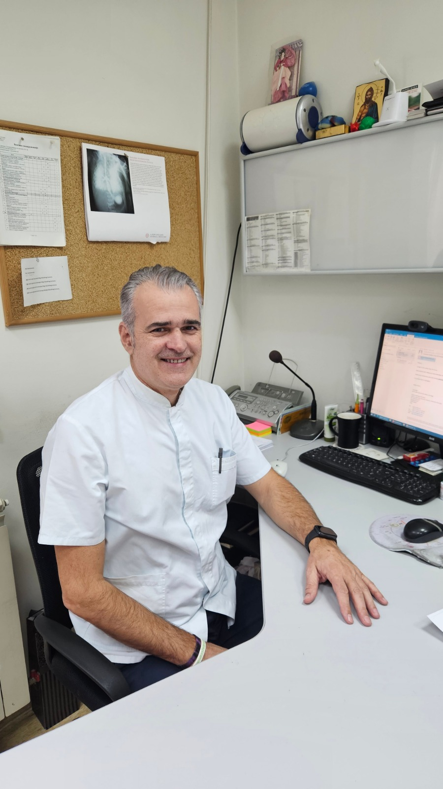

Osoblje
Medicinsko osoblje, na čelu sa doktorom specijalistom interne medicine i onkologije je korisnicima na raspolagaju 24 časa dnevno kao i po potrebi doktori konsultanti iz drugih grana medicine (kardiolog, pulmolog, hirurg, fizioterapeut, endokrinolog). Takođe, staramo se o redovnom sprovođenju propisane farmakoterapije, redovnog kontrolisanja krvnog pritiska i telesne temperature, plasiranja infuzija po potrebi i praćenja osnovnih vitalnih parametara.
Napominjemo da je ordinirajući lekar doma za stare specijalista onkologije, pa možete biti bezbrižni da će Vaši najrođeniji, ukoliko boluju od maligne bolesti, biti u najboljim rukama.
Negovateljice su tu da pruže pomoć Vašim najbližim pri hranjenju, oblačenju, hodanju, održavanju lične higijene.
Socijalni radnik će omogućiti da društveni život Vama dragim osobama bude sadržajniji i prijatniji, kroz kreativne radionice koje će biti individualno prilagođene svakom korisniku shodno njegovim/njenim interesovanjima, zdravstvenom stanju, te i sposobnostima.
NS.dr sc.med. Zoran Andric
